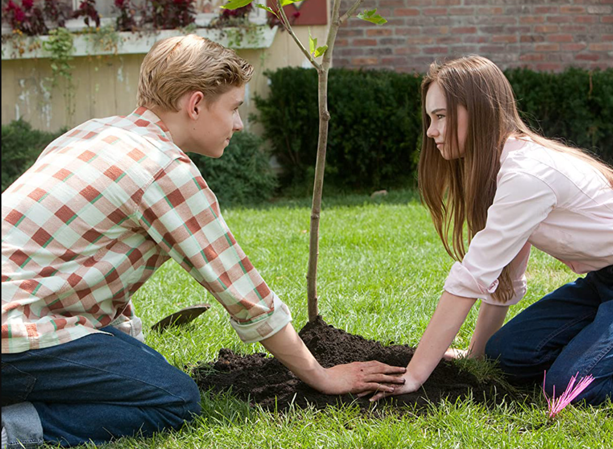

About the Film

"Flipped" is a 2010 American romantic comedy-drama film directed and
co-written by Rob Reiner. It is based on the 2001 novel of the same
name by Wendelin Van Draanen. Starring Callan McAuliffe, Madeline
Carroll, and other notable actors, the film follows the evolving
relationship between two eighth graders who gradually develop
feelings for each other despite their differences. Initially met
with mixed reviews and a modest box office performance, the film has
since gained popularity as a cult favorite.
Plot

In 1957, 7-year-old Bryce Loski moves into a new neighborhood, where
he meets Julianna "Juli" Baker. While Juli immediately falls for
Bryce, he finds her persistent attention overwhelming. As they grow
older, their interactions shift, with Bryce initially avoiding Juli
and even dating someone else to deter her.
However, over time, Bryce begins to understand Juli's depth and
sincerity, especially after witnessing her emotional attachment to
an old sycamore tree that is eventually cut down. As their
eighth-grade year progresses, Bryce starts to develop genuine
feelings for Juli. The story culminates with Bryce planting a new
sycamore tree as a symbol of his feelings, leading to a moment of
mutual understanding between the two.
Their Families
Family dynamics play a crucial role in "Flipped." While Juli comes
from a warm and supportive household, Bryce slowly discovers the
flaws within his own family, particularly in his father’s judgmental
and envious nature.
Juli's Family

Juli's family is loving and encouraging, fostering a positive
environment. Despite financial struggles, they maintain a strong
sense of unity and optimism.
Bryce's Family

Bryce's father, in contrast, is resentful and critical of others,
projecting his insecurities onto his son. As Bryce matures, he
begins to see the toxicity in his father’s behavior, leading him
to reevaluate his perspective.